The SIMPLEX Procedure
It is a method used for solving the linear program. Linear program generally comprises of the problem related to optimization. It is used for the linear program in its standard form. The standard form of the linear program is:
Minimize:
Subject to condition:
And 
Where; the variables of the problem and values are the objective function coefficients.
Now here in the given question, it is to be discussed that the bounding condition for simplex when its loop is replaced by the initialize simplex.
SIMPLEX procedure:
Before getting into the issue, a brief understanding of SIMPLEX procedure is required. Refer to the section 29.3 of the text book for the procedure,
The simplex procedure is useful in making the linear programs. The procedure works on the linear programs that are represented in their standard forms. The procedure takes the standard form of the linear program as the input and yields an n vector and that is one of the optimal remedies to the concerned linear program.
This procedure is specifically helpful when more than one decision variables are available. The procedure works as follows:
The procedure first of all invokes the INITIALIZE-SIMPLEX (A, b, c) procedure in line 1. This finds out if the linear program is viable. If not, the linear program is stored in its slack form. In the third line a loop is initialized.
If all of the coefficients in the concerned objective function
of the linear program are negative integers, the loop would
terminate. If not, the fourth line of the procedure selects a
variable that is  that has a
positive coefficient.
that has a
positive coefficient.
This will be made the entering variable for the procedure. This
variable is chosen using some predefined deterministic rule. Now
lines 5 to 9 check all of the constraints. This is meant for
getting the one that most vitally limits the amount by which
can
be extended with leaving the non-negativity constraint intact.
The variable associated with the non-negativity constraint
is .
Now the leaving variable has to be chosen. Any random variable that
follows the predefined deterministic rule can be chosen to play the
leaving variable. If the quantity of increment in the entering
variable is not controlled by any of the available constraints the
line 11 returns “unbounded”.
.
Now the leaving variable has to be chosen. Any random variable that
follows the predefined deterministic rule can be chosen to play the
leaving variable. If the quantity of increment in the entering
variable is not controlled by any of the available constraints the
line 11 returns “unbounded”.
If this is not true for the scenario, the line 12 of the procedure swaps the entering variable and the leaving variable. This is achieved by invoking the PIVOT procedure. Now the desired solution of the given linear program is calculated using the line 13 to line 16 of the procedure.
Line 13 checks if the encountered variable is the basic or non-basic. If this is basic, the appropriate value is accumulated in the variable in line 15 and if this is not the basic variable then set it to 0 in line 16. The last line of the procedure returns the desired solution for the inputted linear program and that is.
INITIALIZE-SIMPLEX procedure:
The procedure is used to find the basic feasible solution for the problem. This procedure finds out the basic solution if the program is feasible and returns that. If the program is not feasible then the procedure creates a secondary solution and keeps pivoting the secondary form till the time a feasible solution is found.
Even after doing all this if no such solution for the problem is found the procedure returns “infeasible”.
To understand the effect ofthis change a brief understanding of the procedure INITIALIZE-SIMPLEX is required.
Explanation of the procedure:
The first three lines check for the basic solution of the linear program. If the solution is found feasible, the slack form of the program is returned.
If not, the secondary form of the solution is created. This would not be feasible whatsoever. The reason is that the initial solution of the basic form of the problem is not feasible.
Now to find a viable solution pivoting is performed. This is done in the line 8. After pivoting the secondary form, the solution for the problem is searched for. This results in a viable solution. Now to find a complete feasible solution iterative invoke to PIVOT is required till the optimal solution is found.
Once this is found the slack form of the program is found in line 12 and line 13. This slack form is returned with the help of line 15 of the procedure. Even after this if no feasible solution is found for the program, the procedure returns “infeasible”.
So, altogether the procedure either finds a feasible solution for the problem or it just returns infeasible.
Effect of replacing the main loop with INITIALIZE-SIMPLEX:
Now, it is to be checked what would happen if the main loop that is “while” loop of the procedure, is run by a call to INITIALIZE-SIMPLEX.
Suppose that a feasible solution for the linear program exists. Now the initial call to INITIALIZE-SIMPLEX would return the slack form of the linear program. The “While” loop in the SIMPLEX procedure tries to find if this solution of the problem can be bounded by some set of entering or leaving variables or not.
Case 1: The procedure finds the viable solution for the linear program and returns the slack form of the solution.
Case 2: The procedure does not find any viable solution for the linear program and returns “infeasible”.
So whenever the procedure would be called, there would be at least some viable solution found for the program or there would be no feasible solution found.
Case 1:
Now, consider the first case where a feasible solution is found for the program.
If this happens, then being feasible, the solution could always be restricted by some number of entering or leaving variables. In that case the line 11 of the procedure would never be executed.
Case 2:
Now consider the other case:
If no feasible solution for the program could be found, there would be no slack form for the program because there is no solution. If that happens, it makes no sense to talk about the bounded or unbounded form of the solution. Now keeping this in mind, line 11 of the procedure would not be executed, either.
So, even in this the procedure would not return “unbounded”.
Thus, it can be recapitulated from the above discussion that if the “while” loop is run by INITIALIZE-SIMPLEX, there “unbounded” would never be returned regardless of the presence of any feasible solution to the problem.
Linear programming problem (LPP): It is a form of a problem in which maximizing or minimizing an objective is achieved with in the available limited resources and constraints.
The following is the general mathematical representation of the linear programming problem:
Maximize:
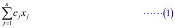
Subject to condition:
 for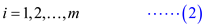
for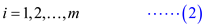
 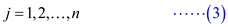
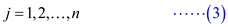
Equation (1) is the objective function and equation (2) and (3) are the constraints for the linear program. Solve the problem for the value of n variables, such that objective function is maximized.
Note: The LPP described in the equations (1), (2), and (3) is also called as the primal of the LLP.
Dual of the Linear Program:
When the LLP is defined for maximization objective, if it is solved for the minimization objective, then the form of LPP used here is known as dual of the given LPP. The original form of the linear program is referred as the primal form.
Minimize:
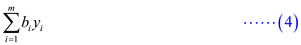
Subject to condition:
 for 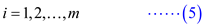
for 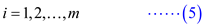
 for 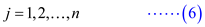
for 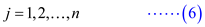
The dual of the LLP (given by the equations (1), (2), and (3)) is formed by performing the following operations:
• Change the maximization to minimization (vice versa).
• Replace each less-than-or-equal-to with greater-than-or-equal-to in constraints.
• Exchange the roles of coefficients on the right-hand-sides and the objective function.
Optimal Objective value:
For the set of values in the variable , if all the
constraints are satisfied, then that set of values in the variable
is
called the feasible solution. Otherwise the set is infeasible.
, if all the
constraints are satisfied, then that set of values in the variable
is
called the feasible solution. Otherwise the set is infeasible.
is the objective function value of the linear program for which the
solution is . The
optimal feasible solution is the set of values in the variable
among
feasible solutions, which yields the maximum objective value.
Optimal objective value of linear program L is 0:
Now prove that optimal objective value of L is 0, if basic solution of both L and dual of L associated with the initial slack forms are feasible.
Proof consists of two steps:
• Extract the meaning of the statement; the fundamental solutions are mixed with the slack form of the feasible solutions in terms of the values of the objective function.
• Get the complete proof with the help of the conclusion drawn.
Step 1:
Basic solution of both L and dual of L associated with the initial slack forms are feasible, so the objective value of L and dual of L can be written as follows:
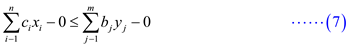
Where, and are the objective functions for the primal and dual linear programs respectively.
Hence, the fundamental solutions for the primal and dual program of the linear program have zero values for each of the variables in them.
Complete the proof using the weak duality theorem.
Weak duality theorem:
Consider that there is a linear program of the following form:
Maximize

Subject to


and, it’s dual is of the following form:
Minimize

Subject to:


Suppose both of them have feasible solutions. Now, consider
 to
be a feasible solution for primal and
to
be a feasible solution for primal and  to be a
feasible solution for dual form.
to be a
feasible solution for dual form.
The, the following inequality holds:

In simple words, the objective function of the primal form of the linear program is bounded by an upper limit and that is the objective function of the linear program’s dual form.
Now, the proof would be completed with corollary 29.9 (Refer to the section 29.4 of the textbook for this).
Consider that the above rule holds for the set of primal and
dual form of a linear program that are L and L’
respectively. Along with this, the objective functions for both of
the primal and the dual form of the linear program equivalent then
 and are the
optimal remedy to the primal and dual form of the linear program
respectively.
and are the
optimal remedy to the primal and dual form of the linear program
respectively.
As the initial statement states that the fundamental solutions for both L and L’ are feasible, setting the variables values to zero yields:
That means, the value of the objective function of the dual from of the linear program holds a value 0.
Now, as the strong duality rule says that if both of the primal and the dual form of the linear program have the feasible and optimal solutions, then the value of objective function of both of them will be equivalent.
So, if the value of the objective function for the dual form is 0, then it will be 0 for the objective function of primal form.
That is,
Therefore, optimal objective value of L is 0, if basic solution of both L and dual of L associated with the initial slack forms are feasible.
Fundamental Theorem of Linear Programming
Linear programming is a way of achieving the maximum possible outcome from a set of resources that are represented as an integrated mathematical design.
In the technical terms the linear programming is a way to achieve optimum results from the linear programming problems. This optimization is subject to a few constraints.
Standard form of linear program:
In a standard form, there is a set of p real numbers that
are  , another
set of q real numbers that are
, another
set of q real numbers that are and a set
of
and a set
of real numbers
that are
real numbers
that are where,
where,


Now, the objective is to find p real numbers such
that
such
that
Maximize
 … … (1)
… … (1)
And that is subject to
 … … (2)
… … (2)
 … … (3)
… … (3)
The first expression is called the objective function. The second and the third expression show the constraints.
Fundamental theorem of Linear Programming:
The fundamental theorem of linear programming states the following:
Consider a matrix of rank q. Now, the linear programming says that:
1. If there is a feasible solution for the problem, there does hold a basic feasible solution for the problem.
2. If there is an optimal solution for the concerned problem, there must be a basic optimal solution for the problem.
This theorem can be proved by using the SIMPLEX procedure. The SIMPLEX procedure works subtly regardless the linear program having any feasible solution, infeasible or has an unbounded solution.
By its name, it suggests that it is related to the theory which is the basis for the existence of linear programming. For understanding this theorem, consider any linear program L which is in its standard form so it holds the following criteria:
a. L is unbounded.
b. L is infeasible.
c. L holds an optimal solution which has a finite objective value.
The theorem can be proved by giving separate proves for each of the above mentioned cases.
Proof of Fundamental Theorem of Linear Programming:
Below is illustrated how the SIMPLEX procedure would work for each of the above mentioned cases.
L is unbounded:
Consider the case that there does exist a feasible solution for the procedure but that cannot be bounded.
In this case, procedure SIMPLEX is able to find a feasible solution. Even in that case it might be possible that the solution cannot be bounded by the means of any entering and leaving variable.
If this happens the solution would remain unbounded. In that case the procedure SIMPLEX returns “unbounded” and terminate the program. There would be no slack form of the program achieved in this case.
L is infeasible:
Consider the case that there is no feasible solution for the provided problem. If this happens then the linear program is not feasible. The Procedure tries to find any feasible solution by applying pivoting but the solution would not be found. Now SIMPLEX procedure would not be able to find any feasible solution. Then the SIMPLEX would simple return “infeasible” and terminate the program. This is not possible to find any slack form in that case also.Strict inequalities:
A deep observance of the linear programming infers that the theory holds for only the non-strict inequalities. That means there exist, rules of the form:
Or
That means the right hand side of the expression might either be equal to, greater than or less than the left hand side.
Strict inequality means that the right hand side of the equation would either be greater than or smaller than the left hand side of the expression.
Term strict inequalities means that it will have the form as,
Or
This states that the value of d is strictly greater than or less than the value of term. In a single term, it can be stated as:
That is, the difference of the terms can never be equal to 0.Effect of strict inequality on the linear program:
In no scenario, strict inequality can be allowed for the linear programming. The reason is that if this is allowed for the linear programming, it is not possible to determine any limit for the value of term. That is, the value of term cannot be bounded between two limits. This makes the linear programming lose its basic objective which is to maximize the utilization of resources to any extreme limit.
Consider the following example,
Suppose there is a concrete instance of the linear programming as below:
Maximize

Subject to condition
The program suggests maximizing the value of y to a limit that is greater than 5.
In this case, it is not known what limit the value y is to be maximized to. That means there might any number of values that the value of y could be maximized to. It creates a confusion that makes the linear programming not hold any longer.
Now, it can be concluded that there will not be any value of y for which the maximum will be obtained and so there will not be any feasible solution for this consideration.
So, the above discussion explains that the linear programming cannot be done with strict inequality allowed.
Given linear program is
maximize
subject to
The given linear program is in the standard form. When converting to slack form, use to denote the slack variable associated with ith inequality.
The ith constraint is given by
along with the nonnegativity constraint
The slack form of the given linear program (1) -(5) is
The basic solution of the linear program is
This solution violates the constraint (3) and it is not a feasible solution.
To determine whether a linear program has any feasible solution we, use auxiliary linear program.
Using this auxiliary linear program, a slack is obtained for which the basic solution is feasible. The solution of the auxiliary linear program determines whether the initial linear program is feasible and if so, it provides a feasible solution.
Lemma:
Let be the linear program in the standard form given by
maximize
subject to
Let be a new
variable, and let is the
auxiliary linear program with  variables
given by
variables
given by
maximize
subject to

Then is feasible if and only if the optimal objective value of is 0.
The auxiliary linear program equivalent to the linear program given in (1) -(5) is
maximize
subject to
The slack form auxiliary linear program given in (6) -(10) is
The system of equations (11) -(14) has 3 equations and 5 variables. Any settings of the variables defines values for ; therefore, there is an infinite number of solutions to this system of equations. A solution is feasible if all of variables are nonnegative, and there can be an infinite number of feasible solutions. Find a basic solution to a system by setting all the non-basic variables to zero.
The basic solution is
The basic solution has which is not feasible for this auxiliary linear program.
To perform the pivot operation, select as the entering variable. Here is selected as leaving variable, because it is the basic variable whose value in the basic solution is most negative. Switch the role of and.
Solve the equation (13) to get the value of.
Solve the equations (12) and (14) to get on right hand side, substitute using (15) into equation (12) gives
equation (14) gives
Objective function is given by
Using the equations (15) -(18) we get the auxiliary linear program as
The basic solution to the system (19) -(22) is found by setting all the non-basic variables to zero. The basic solution is which is feasible. Precede further to find the optimal solution.
Now reformulate the linear program (19) -(22) so that the basic solution has greater objective value. Select a non-basic variable whose coefficient in the objective function is positive and we increase the value as much as possible without violating any of the constraints. This variable becomes basic and some other variable becomes non-basic. Here choose as the entering variable, because should not be in basic variables. By degenerate pivot operation we make it as non-basic.
Let the variable is selected as leaving variable.
Therefore, switch the role of and. Solve the equation (20) to get.
Solve equations (21) and (22) to get on right hand side, substitute using (23). equation (21) gives
equation (22) gives

Objective function is given by
Using the equations (23) -(26) we get the auxiliary linear program as
All the coefficients in the objective function are negative. Thus, the basic solution is obtained and this is the optimal solution.
The basic solution to the system (27) is found by setting all the non-basic variables to zero. The basic solution is which is feasible. The objective value is 0. The slack form obtained is the final solution to the auxiliary problem.
Note: From the Lemmais feasible if and only if the optimal objective value of is 0.
The solution obtained has, the initial problem (1) -(5) is feasible and just remove it from the set of constraints. The objective function is formulated with appropriate substitutions made to include only non-basic variables.
Setting in (23) -(25) and simplifying, we get the objective function
The slack form is obtained as
This slack form has feasible basic solution and can be solved by simplex method.
The system (28) -(31) has 3 equations and 5 variables. Any settings of the variables define values for; therefore, there is an infinite number of solutions to this system of equations. A solution is feasible if all of variables are nonnegative, and there can be an infinite number of feasible solutions. Find a basic solution to a system by setting all the non-basic variables to zero.
The basic solution is
The objective value is
Now reformulate the linear program so that the basic solution has greater objective value. Select a non-basic variable whose coefficient in the objective function is positive and we increase the value as much as possible without violating any of the constraints. This variable becomes basic and some other variable becomes non-basic.
Now, increase up to
 as
the basic variable also
increases. If increased
above 5 then becomes
negative.
as
the basic variable also
increases. If increased
above 5 then becomes
negative.
Now, increase up to
as
the basic variable also
increases.
The constraint (30) is the tightest constraint as it limits how much can increased.
Therefore, switch the role of and. Solve the equation (29) to get.
Solve equations (29) and (31) to get on right hand side, substitute using (32).
equation (29) gives
equation (29) gives
Objective function is given by
Using the equations (32) -(35) we get the linear program as
All the coefficients in the objective function are negative. Thus, the basic solution is obtained and this is the optimal solution.
The basic solution to the system (36) is found by setting all the non-basic variables to zero. The basic solution is which is feasible.
The objective value is
Therefore, this solution is the basic solution to the linear program defined by (28) -(31).
The objective value is
Hence, this solution is also the basic solution to the linear program defined by (1) -(5) which is the given linear program.
The objective value is
Therefore, the solution for the given linear program is given by
Optimal basic solution is and objective value is .
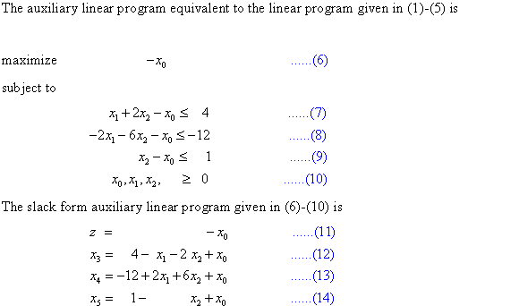
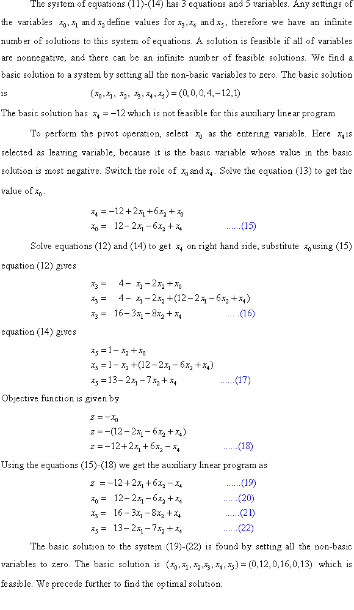
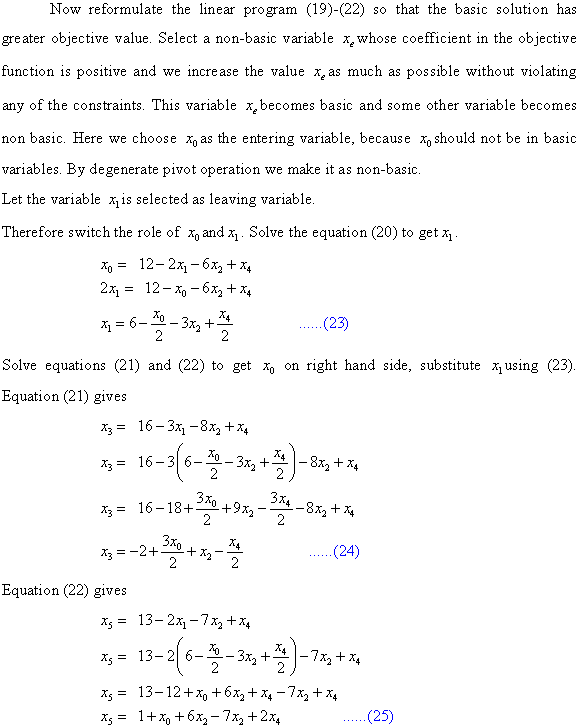
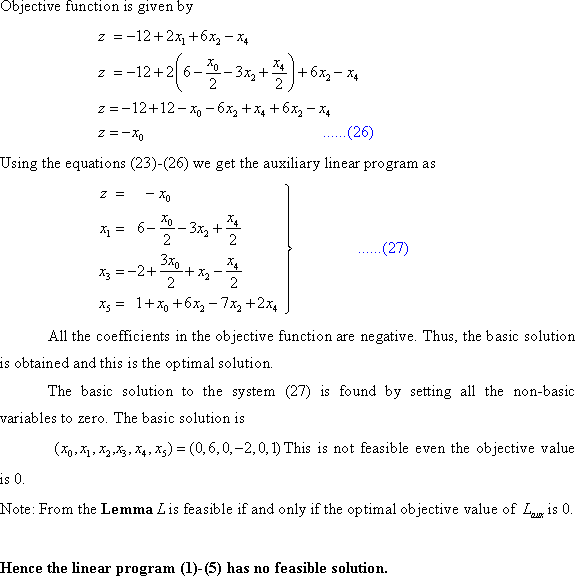
The provided linear program is
Maximize
subject to
The given linear program is in the standard form. When converting to slack form we use to denote the slack variable associated with ith inequality. The ith constraint is given by along with the nonnegativity constraint
The slack form of the given linear program (1)-(5) is

The basic solution of the linear program is
This solution violates the constraint (2) and (3) and also it is not a feasible solution.
In order to determine whether a linear program has any feasible solution we will use auxiliary linear program.
Using this auxiliary linear program, a slack form is obtained for which the basic solution is feasible. The solution of the auxiliary linear program determines whether the initial linear program is feasible and if so, it provides a feasible solution.
Lemma:
Let be the linear program in the standard form given by
maximize
subject to
Let be a new
variable, and let is the
auxiliary linear program with variables
given by
maximize
subject to
Then is feasible if and only if the optimal objective value of is 0.
The auxiliary linear program equivalent to the linear program given in (1)-(5) is
maximize
subject to
The slack form auxiliary linear program given in (6)-(10) is
• The system of equations (11)-(14) has 3 equations and 5 variables. Any settings of the variables define values for; therefore we have an infinite number of solutions to this system of equations.
• A solution is feasible if all of variables are nonnegative, and there can be an infinite number of feasible solutions. We find a basic solution to a system by setting all the non-basic variables to zero. The basic solution is
The basic solution has and which is not feasible for this auxiliary linear program.
• To perform the pivot operation, select as the entering variable. Here is selected as leaving variable, because it is the basic variable whose value in the basic solution is most negative. Switch the role of and.
• Solve the equation (13) to get the value of.
• Solve equations (12) and (14) to get on right hand side, substitute using (15) Equation (12) gives
Equation (14) gives
Objective function is given by
Using the equations (15)-(18) we get the auxiliary linear program as
The basic solution to the system (19)-(22) is found by setting all the non-basic variables to zero. The basic solution is which is feasible. We precede further to find the optimal solution.
• Now reformulate the linear program (19)-(22) so that the basic solution has greater objective value. Select a non-basic variable whose coefficient in the objective function is positive and we increase the value as much as possible without violating any of the constraints.
• This variable becomes basic and some other variable becomes non basic. Here we choose as the entering variable, because should not be in basic variables. By degenerate pivot operation we make it as non-basic.
Let the variable is selected as leaving variable.
Therefore switch the role of and. Solve the equation (20) to get.
Solve equations (21) and (22) to get on right hand side, substitute using (23). Equation (21) gives
Equation (22) gives
Objective function is given by
Using the equations (23)-(26) we get the auxiliary linear program as
All the coefficients in the objective function are negative. Thus, the basic solution is obtained and this is the optimal solution.
• The basic solution to the system (27) is found by setting all the non-basic variables to zero.
• The basic solution is which is feasible. The objective value is 0. The slack form obtained is the final solution to the auxiliary problem.
Note: From the Lemmais feasible if and only if the optimal objective value of is 0.
The solution obtained has, the initial problem (1)-(5) is feasible and we can just remove it from the set of constraints. The objective function is formulated with appropriate substitutions made to include only non-basic variables.
Setting and simplifying, we get the objective function
Also set in the equations (23)-(25) to obtain the slack form as
This slack form has feasible basic solution and now we can solve it by simplex method.
The system (28)-(31) has 3 equations and 5 variables. Any settings of the variables define values for; therefore we have an infinite number of solutions
The objective value is
Now, reformulate the linear program so that the basic solution has greater objective value. Select a non-basic variable whose coefficient in the objective function is positive and we increase the value as much as possible without violating any of the constraints. This variable becomes basic and some other variable becomes non basic.
The variable  is selected
as it is has positive coefficient in the objective function.
is selected
as it is has positive coefficient in the objective function.
If increased
above 3 then becomes
negative.
If increased
above 1 then becomes
negative.
If increased
above then
becomes
negative.
The constraint (31) is the tightest constraint as it limits how
much can
increased.
Therefore switch the role of and. Solve the
equation (31) to get.
Solve equations (29) and (30) to get on right
hand side, substitute using
(32).
Equation (29) gives
Equation (30) gives
Objective function is given by
Using the equations (32)-(35) we get the linear program as
We find a basic solution to a system by setting all the non-basic variables to zero. The basic solution is
The objective value is
Now again reformulate the linear program so that the basic solution has greater objective value. Select a non-basic variable whose coefficient in the objective function is positive and we increase the value as much as possible without violating any of the constraints. This variable becomes basic and some other variable becomes non basic.
The variable is selected as it is the only variable with positive coefficient in the objective function.
We can increase up
to,
the basic variables  also
increases to.
also
increases to.
Hence the given linear programming problem given by (1)-(5) is unbounded.
Variation of Dual and Primal
Linear programming is used to find out the best outcome from a given number of equations. In linear programming, a list of requirements is considered.
For better understanding of the question, a shallow look at primal and dual of the linear programming would be required. In the linear program, every primal has its corresponding dual.
It is shown below,
Primal LP (P) :
Find values for the n variables:
Maximize
 … … (1)
… … (1)
Subject to condition
for i=1, 2… m. … … (2)
for j=1, 2… n. … … (3)
Here, equation (1) is the objective function and equations (2) and (3) are the constraints for the objective.
Dual LP (D) :
Find values for the m variables:
Minimize
 … … (4)
… … (4)
Subject to condition
for j= 1, 2… n. … … (5)
for i=1, 2… m. … … (6)Here in the problem, a 1-variable linear program is given in which there is a primal P. It also has a dual D.
Primal:
Consider the primal P given below:
Maximize
Subject to constraint
Where r, s, t are arbitrary real numbers. And x is the new defined variable for dual.
Dual of P:
The dual D of this variable program is given below:
Minimize

Subject to constraint
Now, there are three kinds of the solution that can be found for the concerned linear programs. They are discussed as below:
Optimal solution: Optimal solution is a solution which provides the best suited solution for the equations. When there is more than 1 solution of linear programming, then the best solution as per requirement is the optimal solution.
Feasible solution: In linear programming, a feasible solution is a solution which provides a single or infinite number of solutions. In this case, many of the conditions are satisfied which provides optimal solution.
Infeasible solution: In linear programming, an infeasible solution is a solution which does not have any solution. In this case, the equations provide a parallel line.
There are certain implications of the feasibility of the primal and the dual form of the linear program.
1. If there exists a feasible solution for the primal form of
the program and that is and for the
dual form that is . Then
. Then

2. If there exists a feasible solution for the primal form of
the program, that is but not for
the dual form of the program. Then
That means
3. If there exists a feasible solution for the dual form of the
program, that is but not for
the dual form of the program. Then
That means
4. There are no feasible solutions to either of the primal or the dual form of the linear form.
Now, the condition is to be asserted on primal and dual for various values of r, s and t.
1. Both primal and the dual have optimal solutions with the finite objective values. For this to happen both primal and dual have feasible solution. Moreover, keeping the previously discussed implications in mind the value of objective function of the primal form would be equal to the objective function of the dual form of the linear program.
To find the feasible solution for both of the primal and the dual form, any of these values can be used,
a.and.
b. and.
c. and
 has an arbitrary value.
has an arbitrary value.
In case a, the value of r is taken as less than 0, value of s is equal to or greater than 0 and value of t is either equal to or greater than 0. This condition provides the optimal solution and SIMPLEX returns “feasible”.
In case b, the value of r is made equal to 0, value of s can be either greater than or equal to zero and the value of t remains same as that in case a. In this, the SIMPLEX returns “feasible”.
In case c, the value of r is made greater than 0, the value of s remains same as in case b and value of t can take any of the arbitrary values. The value returned by SIMPLEX is “feasible”.
2. Primal P is feasible, but dual D is infeasible.
In this case the value of the objective function of the primal function would tend to negativity.
It is possible in two ways as,
a. and.
b. and.
In both ways, a and b, the value of r is taken either 0 or greater than 0 or less than 0. The value of s is less than or equal to zero and the value of t is taken greater than 0. These cases make the program P as feasible and it is dual D as infeasible.
3. Dual D is feasible but primal P is infeasible.
In this case the value of the objective function of the dual form must tend to infinity.
This condition is possible only when
, and
In the condition given above, the value of r is taken as either equal to or greater than 0 and the value of is taken as less than 0. This condition will provide infeasible solution for P and feasible solution for its dual D.
4. Neither primal P nor the dual D is feasible. It is possible when and.
When the value of r is made equal to zero, the substitution of the value in the respective objective function and the constraints would yield the values of s and t.
Now the value of s is less than 0 and value of t as greater than 0.
This leads to providing infeasible solution for program P and its dual D.